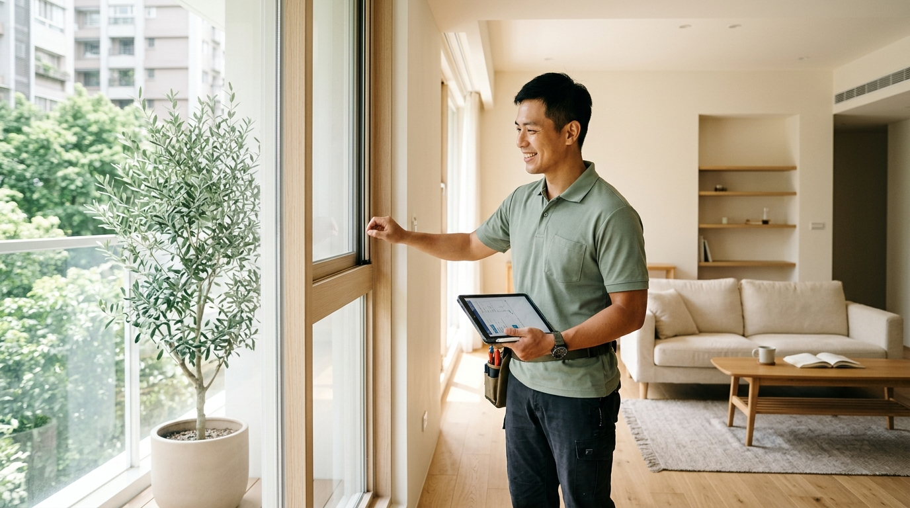

對我們來說，一間房子不只是水泥、磚瓦與管線的組合，而是承載著一個家庭未來數十年歡笑、成長與平安的避風港。安居科技有限公司紮根於台中北屯，用最溫柔的心意與最嚴謹的科學專業，陪伴每一位屋主走過交屋前最關鍵的一哩路。

一群熱愛家庭生活、擁有國家級營建與水電背景的台中在地工程人
「安居科技有限公司」誕生於台中市北屯區（遼陽四街143號）。我們是一家專注於住宅健康檢查與非破壞性科學驗屋的專業機構，更是陪伴屋主安心成家的溫暖夥伴。
在台灣，買下一間屬於自己的房子，往往需要傾注一個家庭數年甚至數十年的積蓄與努力。然而，當屋主滿懷期待地收到「交屋通知單」走進新家時，面對藏在牆壁裡的管線、複雜的配電箱與上百項建材細節，心中卻常常充滿了不知所措與擔憂。
看見這份需求，我們集結了具備室內裝修工程管理、屋內線路裝修、自來水配管等國家級專業背景的工程師，並引進與國際同步的溫和非破壞性檢測科技，在台中成立了「安居科技」。我們希望透過科技的力量看見肉眼看不見的細節，並用家人的同理心，為大台中與中部地區的每一戶新家守住最根本的安全與品質。
在創立安居科技之初，我們便為公司定下了三個堅定不移的發展方向：
我們堅持不以敲打破壞的方式對待屋主心愛的新家，而是全面導入紅外線熱像、高頻水分感測、管路光學內視與精密電氣檢測。讓每一處隱蔽問題都有客觀溫和的科學數據說話，不靠感覺猜測、也不遺漏任何角落。
驗屋是一份建立在「信任」上的志業。我們設立公司的核心原則就是誠實透明——無論是公開合理的實坪收費、或是真正符合國家營建與水電規範的技師團隊，我們絕不浮誇包裝、不巧立名目，只給屋主最真實可靠的保障。
我們選擇從台中北屯出發，深入了解大台中各重劃區與山海線的氣候、水質與建築特性。我們不只想做一次性的檢驗服務，更希望成為大台中家庭在成家路上隨時找得到人、問得到答案的在地好鄰居。
在安居科技心中，一場真正理想的驗屋服務，不只是交出一份厚厚的報告，而是讓屋主感受到被理解、被支持與被呵護：
我們常問團隊裡的每一位工程師：「如果這間房子明天是你的父母、伴侶與孩子要住進來，你會怎麼檢查？」因此，我們在乎的不只是表面的油漆平不平整，更在乎廚房插座有沒有確實接地、浴室防水層能不能撐過十年的日常淋浴、窗框能不能抵擋颱風天的豪雨。為您多看一眼，就是為您未來十年的居家幸福多一分保障。
我們知道大多數屋主都不是營建背景出身，看到滿屋子的工程術語往往會感到緊張。安居科技的理想服務，是做您身邊「最會說白話文的工程家人」——驗屋當天我們會帶著您逐一巡視，耐心告訴您哪些只是無傷大雅的小美容、哪些是必須請建商優先改善的安全重點，讓您心裡踏實、不再慌張。
驗屋的目的從來不是為了與建商爭吵對立，而是為了把房子修好。我們期許自己成為屋主與建商工務之間「最理性、最溫暖的專業橋樑」——以清晰的圖文位置與客觀數據，禮貌且明確地向工務人員說明修繕建議，讓建商樂意配合改善，陪伴您圓滿、開心地迎來交屋的那一天。